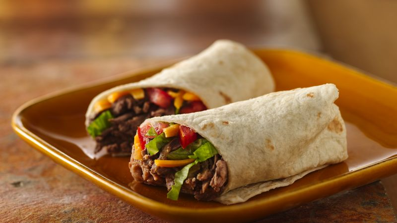

Burrito

A burrito is a dish in Mexican and Tex-Mex cuisine that took form in California cuisine, consisting of a flour tortilla wrapped into a sealed cylindrical shape around various ingredients. The tortilla is sometimes lightly grilled or steamed to soften it, make it more pliable, and allow it to adhere to itself when wrapped. Burritos are often eaten by hand, as their tight wrapping keeps the ingredients together. Burritos can also be served "wet", that is to say covered in a savory and spicy sauce, where they would be eaten with a fork and knife.
Ingredients:
- Meat (Chicken/Beef/Pork)
- Chopped onion
- Beans
- Salsa
- Chopped green chilies
- Tortillas
- Cheese
- Taco sauce and shredded lettuce, optional
Steps:
- In a large skillet, cook beef and onion over medium heat until meat is no longer pink; drain. Stir in the chili, salsa and green chilies. Bring to a boil. Reduce heat; simmer, uncovered, for 5 minutes.
- Spoon about 1/2 cupful beef mixture off center on each tortilla. Top each with a slice of cheese; roll up. Serve with taco sauce and lettuce if desired.